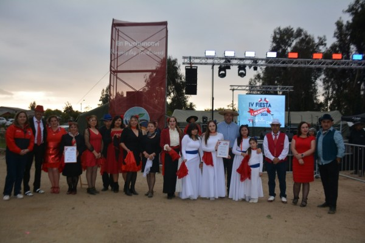

Comunidad y tradiciones
Cerca de seis mil personas participaron en la IV Fiesta de la Chilenidad
La celebración reunió a familias, artistas locales y emprendedores durante tres jornadas en la Medialuna de Puchuncaví.
Leer publicación original